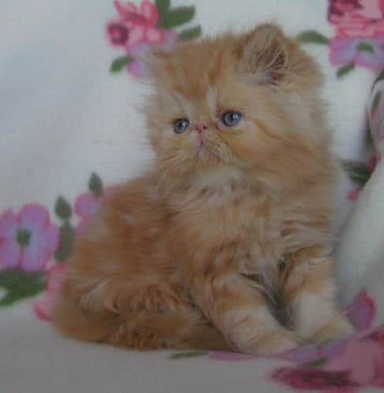

Mit kæledyr Verdi

Verdi var min kat som var mega sød og han kunne godt lide at blive nusset
over næsen. Han var en perserkat. D.v.s. at han havde meget hår og en kort næse.
Her er en liste over nogle af Verdis egenskaber
- Han kunne hoppe forholdsvis højt
- Han var god til at kradse i mig
- Han havde rødt hår
Her er et link til billeder af andre katte men de er ikke lige så søde:
billeder af andre katte